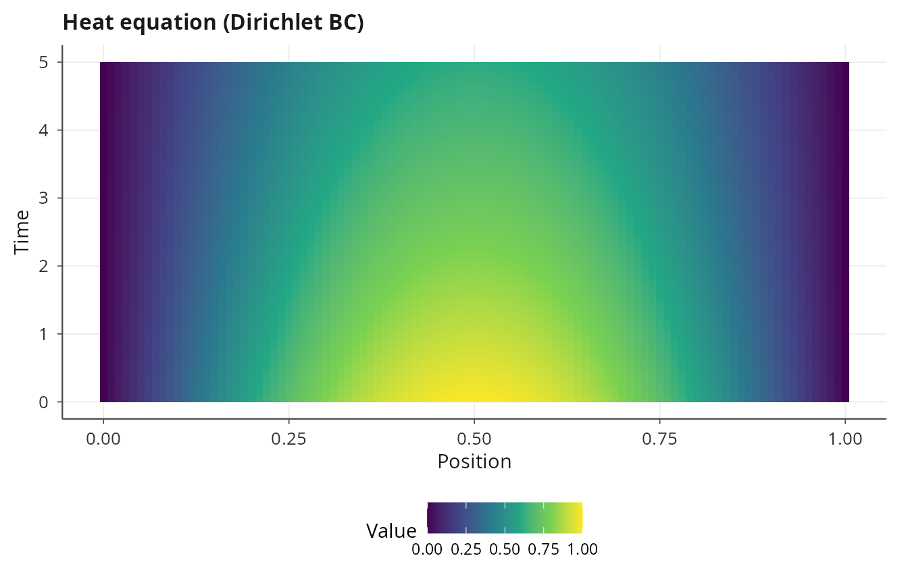
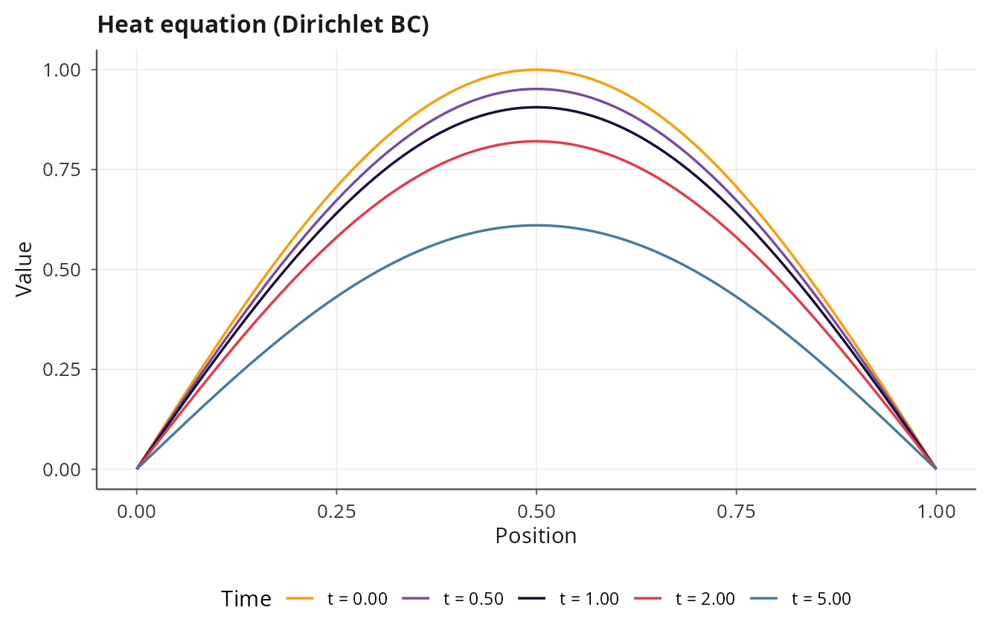
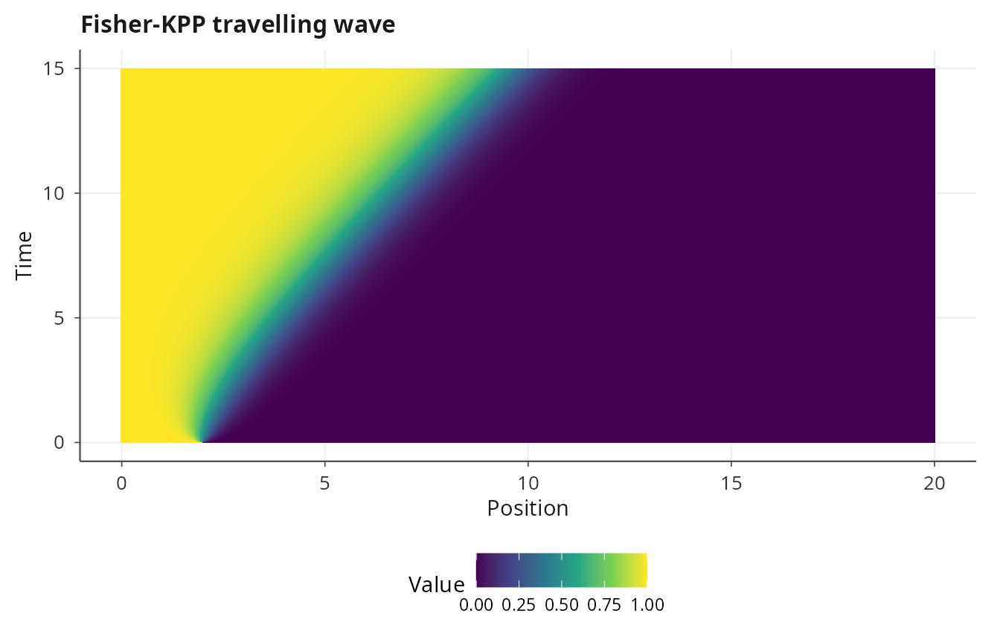
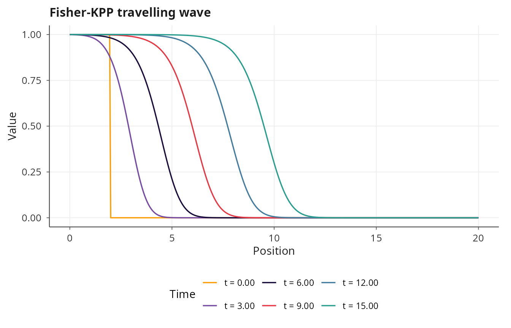
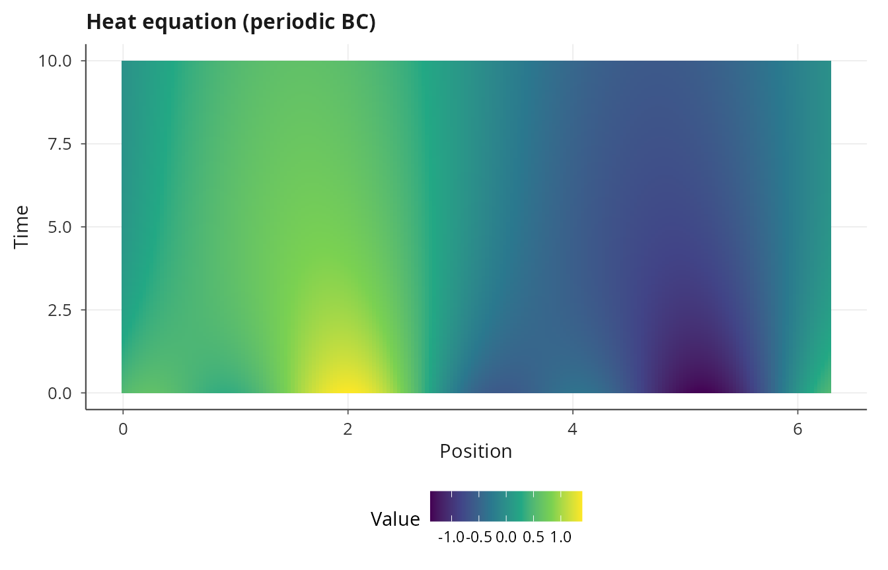
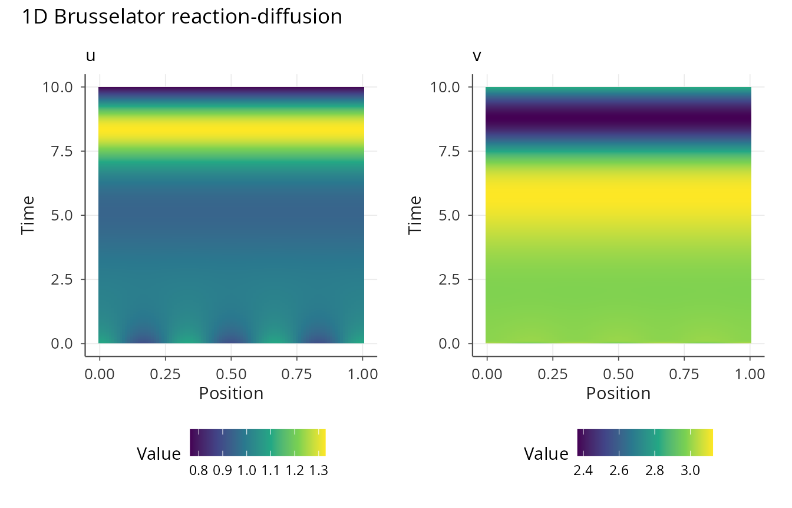
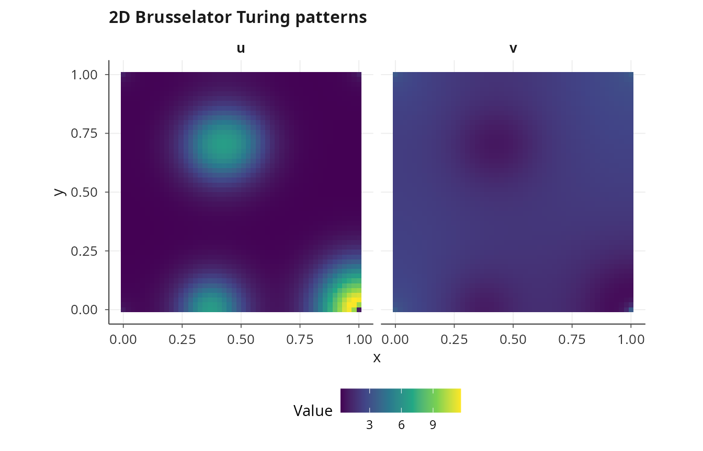
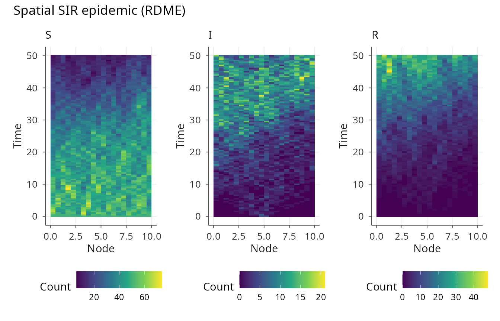
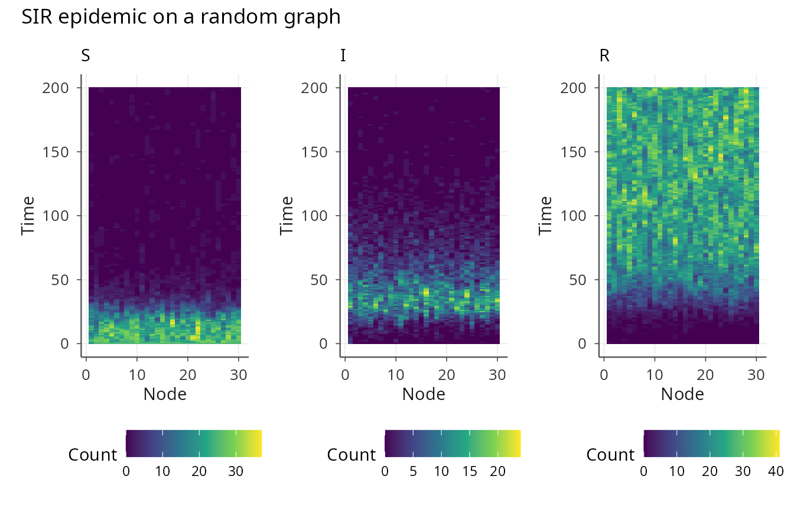
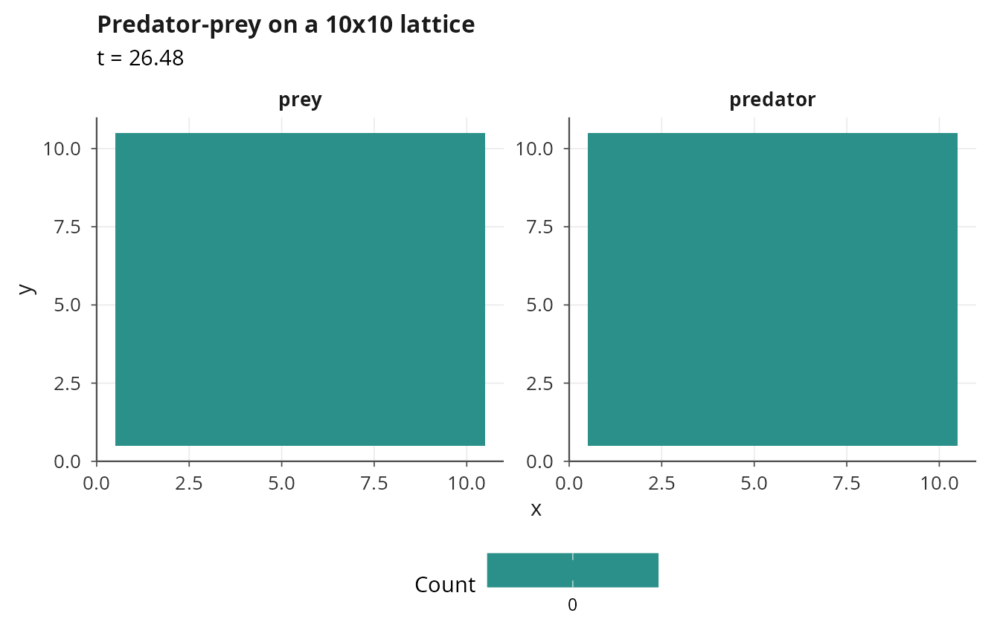

Spatial dynamics: PDE, RDME, and graph models
Pablo Almaraz, RElab
2026-05-23
Source:vignettes/spatial-dynamics.Rmd
spatial-dynamics.RmdSpatial models in janos
Many dynamical systems involve spatial structure, whether through
continuous diffusion described by partial differential equations,
discrete stochastic transport on a lattice, or reaction-diffusion on an
arbitrary network topology. janos supports all three through a unified
system_spec() interface: 1D and 2D PDEs are solved via the
method of lines (MOL), the reaction-diffusion master equation (RDME)
handles spatially resolved stochastic simulation on regular grids, and
the graph RDME extends this to arbitrary network topologies.
1D partial differential equations
A 1D PDE is specified with the pde and
spatial arguments in system_spec(). The
pde argument is a list of formulas where spatial derivative
operators d1x() (first derivative) and d2x()
(second derivative, Laplacian in 1D) act on state variables. The
spatial argument defines the domain, number of grid points,
and boundary conditions.
Heat equation
The heat equation \(\partial_t u = D \, \partial_{xx} u\) describes diffusion of a scalar field \(u\) on a spatial domain. With Dirichlet boundary conditions fixing the endpoints to zero, any initial perturbation decays exponentially toward the trivial steady state.
heat <- system_spec(
pde = list(u ~ D * d2x(u)),
spatial = list(
domain = c(0, 1),
n_grid = 101,
bc = list(u = list(type = "dirichlet", left = 0, right = 0))
),
state_names = "u",
parms = list(D = 0.01),
init = function(x) sin(pi * x)
)
result_heat <- dyn_sim(heat, t_max = 5, solver = solver_mol(dt = 0.0001),
discard_transient = 0)
#> ⚙ Simulating PDE system (compiled PDE/MOL)
#> ¡ Grid: N = 101, dx = 0.0100, domain = [0, 1]
#> ¡ Integration: MOL (RK4), dt = 1e-04
#> ¡ Duration: 5, discarding 0 transient
#> ⏱ Elapsed: 0.04 seconds
#> ✔ Simulation complete: 5001 time points, 101 grid points, 1 state(s)
print(result_heat)
#>
#> Dynamical system simulation
#> ---------------------------
#>
#> System type: PDE (1D, method of lines)
#>
#> Solver: MOL (dt = 0.0001)
#> Simulation: t_max = 5.0, discarding 0.0 transient
#> Spatial grid: 101 points, dx = 0.0100
#> Attractor points: 5001
#>
#> Spatial averages on attractor (mean ± sd):
#> u: 0.4975 ± 0.0707
plot(result_heat, title = "Heat equation (Dirichlet BC)")
plot(result_heat, type = "snapshot", times = c(0, 0.5, 1, 2, 5),
title = "Heat equation (Dirichlet BC)")
The init argument for PDE models accepts a function of
the spatial coordinate x, which is evaluated at each grid
point to construct the initial condition. The solver_mol()
backend discretizes space with second-order central finite differences
and integrates the resulting ODE system with RK4.
Fisher-KPP traveling wave
The Fisher-KPP equation \(\partial_t u = D \, \partial_{xx} u + r \, u(1 - u)\) models the spatial spread of a population with logistic growth. Starting from a localized initial condition, the solution develops a traveling wave front that propagates at the minimum speed \(c^* = 2\sqrt{Dr}\).
fisher <- system_spec(
pde = list(u ~ D * d2x(u) + r * u * (1 - u)),
spatial = list(
domain = c(0, 20),
n_grid = 401,
bc = list(u = list(type = "neumann", left = 0, right = 0))
),
state_names = "u",
parms = list(D = 0.1, r = 1.0),
init = function(x) ifelse(x < 2, 1, 0)
)
result_fisher <- dyn_sim(fisher, t_max = 15, solver = solver_mol(dt = 0.001),
discard_transient = 0)
#> ⚙ Simulating PDE system (compiled PDE/MOL)
#> ¡ Grid: N = 401, dx = 0.0500, domain = [0, 20]
#> ¡ Integration: MOL (RK4), dt = 0.001
#> ¡ Duration: 15, discarding 0 transient
#> ⏱ Elapsed: 0.05 seconds
#> ✔ Simulation complete: 1501 time points, 401 grid points, 1 state(s)
plot(result_fisher, title = "Fisher-KPP travelling wave")
plot(result_fisher, type = "snapshot", times = c(0, 3, 6, 9, 12, 15),
title = "Fisher-KPP travelling wave")
The Neumann boundary conditions \(\partial_x u = 0\) at both ends implement no-flux conditions, allowing the wave to propagate without artificial reflections (until it reaches the boundary).
Boundary conditions
janos supports three types of boundary conditions. Dirichlet conditions fix the state at the boundary to a specified value. Neumann conditions fix the spatial derivative (flux) at the boundary using a ghost-point formula. Periodic conditions wrap the domain so that the left and right boundaries are connected, forming a ring.
# Periodic boundary conditions (ring domain)
ring_heat <- system_spec(
pde = list(u ~ D * d2x(u)),
spatial = list(
domain = c(0, 2 * pi),
n_grid = 201,
bc = list(u = list(type = "periodic"))
),
state_names = "u",
parms = list(D = 0.05),
init = function(x) sin(x) + 0.5 * cos(3 * x)
)
result_periodic <- dyn_sim(ring_heat, t_max = 10,
solver = solver_mol(dt = 0.0005),
discard_transient = 0)
#> ⚙ Simulating PDE system (compiled PDE/MOL)
#> ¡ Grid: N = 201, dx = 0.0314, domain = [0, 6.28318530717959]
#> ¡ Integration: MOL (RK4), dt = 5e-04
#> ¡ Duration: 10, discarding 0 transient
#> ⏱ Elapsed: 0.03 seconds
#> ✔ Simulation complete: 2001 time points, 201 grid points, 1 state(s)
plot(result_periodic, title = "Heat equation (periodic BC)")
Multi-state 1D PDE
Systems of coupled PDEs are specified by providing multiple formulas
in the pde list, with separate boundary conditions for each
state. The Brusselator reaction-diffusion system is a canonical example
that can produce Turing patterns when the diffusion coefficients differ
sufficiently:
brusselator_1d <- system_spec(
pde = list(
u ~ Du * d2x(u) + a - (b + 1) * u + u^2 * v,
v ~ Dv * d2x(v) + b * u - u^2 * v
),
spatial = list(
domain = c(0, 1),
n_grid = 101,
bc = list(
u = list(type = "neumann", left = 0, right = 0),
v = list(type = "neumann", left = 0, right = 0)
)
),
state_names = c("u", "v"),
parms = list(a = 1.0, b = 3.0, Du = 0.01, Dv = 0.1),
init = function(x) c(1.0 + 0.1 * cos(6 * pi * x),
3.0 + 0.1 * cos(6 * pi * x))
)
result_brus <- dyn_sim(brusselator_1d, t_max = 10,
solver = solver_mol(dt = 0.00001),
discard_transient = 0)
#> ⚙ Simulating PDE system (compiled PDE/MOL)
#> ¡ Grid: N = 101, dx = 0.0100, domain = [0, 1]
#> ¡ Integration: MOL (RK4), dt = 1e-05
#> ¡ Duration: 10, discarding 0 transient
#> ⏱ Elapsed: 1.47 seconds
#> ✔ Simulation complete: 100001 time points, 101 grid points, 2 state(s)
plot(result_brus, title = "1D Brusselator reaction-diffusion")
Note the very small time step, which is necessary to satisfy the CFL
stability condition for the diffusion operator. The solver prints a
warning when the chosen dt exceeds the estimated CFL
limit.
2D partial differential equations
Two-dimensional PDEs extend the spatial operators to include
d1y(), d2y(), and lap() (the
Laplacian, expanded as d2x + d2y). The spatial
argument must specify a 2D domain with x and y
ranges and grid sizes.
2D Brusselator Turing patterns
The Brusselator on a 2D domain produces striking Turing patterns: spots, stripes, and labyrinthine structures depending on the parameters and initial conditions.
brusselator_2d <- system_spec(
pde = list(
u ~ Du * lap(u) + a - (b + 1) * u + u^2 * v,
v ~ Dv * lap(v) + b * u - u^2 * v
),
spatial = list(
domain = list(x = c(0, 1), y = c(0, 1)),
n_grid = list(nx = 50, ny = 50),
bc = list(
u = list(
x = list(type = "neumann", left = 0, right = 0),
y = list(type = "neumann", left = 0, right = 0)
),
v = list(
x = list(type = "neumann", left = 0, right = 0),
y = list(type = "neumann", left = 0, right = 0)
)
)
),
state_names = c("u", "v"),
parms = list(a = 1.0, b = 3.5, Du = 0.01, Dv = 0.1),
init = function(x, y) c(1.0 + 0.1 * runif(1, -1, 1),
3.5 + 0.1 * runif(1, -1, 1))
)
result_2d <- dyn_sim(brusselator_2d, t_max = 10,
solver = solver_mol2d(dt = 0.0001),
discard_transient = 5)
#> Warning: dt = 1e-04 exceeds the 2D CFL stability limit (0.000030) for estimated
#> D = 3.5. Consider reducing dt or increasing n_grid.
#> ⚙ Simulating 2D PDE system (compiled 2D PDE/MOL)
#> ¡ Grid: Nx = 50, Ny = 50, dx = 0.0204, dy = 0.0204
#> ¡ Integration: MOL 2D (RK4), dt = 1e-04
#> ⏱ Elapsed: 12.14 seconds
#> ✔ Simulation complete: 10001 time points, 50x50 grid, 2 state(s)
plot(result_2d, title = "2D Brusselator Turing patterns")
The solver_mol2d() backend uses second-order central
differences on a Cartesian grid with RK4 time stepping. The output
contains 3D arrays (spatial grid x spatial grid x time) for each state
variable.
Reaction-diffusion master equation (RDME)
While PDEs describe continuous concentrations, many biological systems involve discrete numbers of molecules in small spatial compartments where stochastic fluctuations matter. The RDME [1] divides space into voxels, treats reactions within each voxel as a CTMC, and models transport between adjacent voxels as first-order diffusion hops. The resulting process is a high-dimensional CTMC simulated by the Gillespie algorithm over the combined set of reaction and diffusion channels.
An RDME model in janos is a CTMC model (stoichiometry + propensities)
with an added spatial specification containing
diffusion_rates, n_voxels, and
domain:
rdme_sir <- system_spec(
stoichiometry = list(
infection = c(S = -1L, I = 1L, R = 0L),
recovery = c(S = 0L, I = -1L, R = 1L)
),
propensities = list(
infection ~ beta * S * I,
recovery ~ gamma * I
),
state_names = c("S", "I", "R"),
parms = list(beta = 0.005, gamma = 0.1,
Ds = 0.1, Di = 0.5, Dr = 0.1),
init = function(x) {
if (abs(x - 5) < 0.5) c(S = 50L, I = 5L, R = 0L)
else c(S = 50L, I = 0L, R = 0L)
},
spatial = list(
diffusion_rates = list(S ~ Ds, I ~ Di, R ~ Dr),
n_voxels = 20,
domain = c(0, 10)
)
)
result_rdme <- dyn_sim(rdme_sir, t_max = 50,
solver = solver_rdme(output_dt = 0.5, seed = 42),
discard_transient = 0)
#> ⚙ Simulating RDME reaction-diffusion system (RDME)
#> ¡ Grid: 20 voxels, dx = 0.5000
#> ¡ Reactions: 2 (infection, recovery)
#> ¡ BCs: reflecting, seed = 42
#> ¡ Duration: 50, discarding 0 transient
#> ⏱ Elapsed: 0.01 seconds
#> ✔ Simulation complete: 101 time points, 56919 events
plot(result_rdme, title = "Spatial SIR epidemic (RDME)")
The init function for 1D RDME models takes the spatial
coordinate of the voxel center, allowing spatially heterogeneous initial
conditions. Here the infection is seeded in the voxel nearest to the
center of the domain. The diffusion rates can reference parameters, and
the solver outputs spatially resolved snapshots at regular
intervals.
Graph RDME
Many spatial systems are not well described by regular grids. Ecological metapopulations live on habitat patches connected by dispersal corridors; intracellular reactions occur in compartments linked by transport channels; epidemics spread through contact networks. The graph RDME generalizes the voxel-based RDME to arbitrary network topologies specified through an adjacency matrix.
Graph topology helpers
janos provides constructors for common graph topologies:
# 5x5 rectangular lattice
adj_lat <- lattice_graph(5, 5, bc = "periodic")
# Ring of 10 nodes
adj_ring <- ring_graph(10)
# Star with 8 leaves
adj_star <- star_graph(8)
# Complete graph on 6 nodes
adj_comp <- complete_graph(6)
# Erdos-Renyi random graph
adj_rand <- random_graph(20, p = 0.3, seed = 42)Each constructor returns a symmetric adjacency matrix with a
layout attribute that enables automatic spatial
plotting.
SIR on a network
Consider an SIR epidemic spreading on a small-world network. The infection can only transmit between connected nodes, and each node is a well-mixed compartment with its own copy of the reaction system:
# Create network
adj <- random_graph(30, p = 0.2, seed = 7)
# Define model (same reactions as before, but on a graph)
graph_sir <- system_spec(
stoichiometry = list(
infection = c(S = -1L, I = 1L, R = 0L),
recovery = c(S = 0L, I = -1L, R = 1L)
),
propensities = list(
infection ~ beta * S * I,
recovery ~ gamma * I
),
state_names = c("S", "I", "R"),
parms = list(beta = 0.01, gamma = 0.05,
Ds = 0.05, Di = 0.1, Dr = 0.05),
init = function(node) {
if (node == 1) c(S = 20L, I = 5L, R = 0L)
else c(S = 25L, I = 0L, R = 0L)
},
spatial = list(
diffusion_rates = list(S ~ Ds, I ~ Di, R ~ Dr),
adjacency = adj
)
)
result_graph <- dyn_sim(graph_sir, t_max = 200,
solver = solver_rdme(output_dt = 1.0, seed = 42),
discard_transient = 0)
#> ⚙ Simulating Graph RDME reaction-diffusion system (graph RDME)
#> ¡ Nodes: 30, edges: 158
#> ¡ Reactions: 2 (infection, recovery)
#> ¡ Seed: 42
#> ¡ Duration: 200, discarding 0 transient
#> ⏱ Elapsed: 0.02 seconds
#> ✔ Simulation complete: 201 time points, 45267 events
print(result_graph)
#>
#> Dynamical system simulation
#> ---------------------------
#>
#> System type: graph RDME (network-structured)
#>
#> Solver: RDME (seed = 42)
#> Total events: 45,267
#> Nodes: 30, edges: 158
#> Simulation: t_max = 200.0, discarding 0.0 transient
#> Attractor points: 201
#>
#> Spatial averages on attractor (mean ± sd):
#> S: 3.3776 ± 7.2772
#> I: 2.5279 ± 3.6318
#> R: 19.0945 ± 8.5817
plot(result_graph, title = "SIR epidemic on a random graph")
The graph RDME solver computes diffusion hop rates from the adjacency matrix weights and simulates all reaction and diffusion events via a single Gillespie direct algorithm operating over the combined channel space of all nodes and edges.
Lattice ecology
For spatial ecology on a regular grid, lattice_graph()
with a layout attribute enables automatic 2D heatmap visualization:
# Predator-prey on a 10x10 lattice
adj_eco <- lattice_graph(10, 10, bc = "periodic")
pp_lattice <- system_spec(
stoichiometry = list(
prey_birth = c(prey = 1L, predator = 0L),
predation = c(prey = -1L, predator = 1L),
predator_death = c(prey = 0L, predator = -1L)
),
propensities = list(
prey_birth ~ alpha * prey,
predation ~ beta * prey * predator,
predator_death ~ gamma * predator
),
state_names = c("prey", "predator"),
parms = list(alpha = 1.0, beta = 0.005, gamma = 0.5,
D_prey = 0.2, D_predator = 0.1),
init = function(node) {
c(prey = sample(10:30, 1), predator = sample(0:5, 1))
},
spatial = list(
diffusion_rates = list(prey ~ D_prey, predator ~ D_predator),
adjacency = adj_eco
)
)
result_eco <- dyn_sim(pp_lattice, t_max = 50,
solver = solver_rdme(output_dt = 1.0, seed = 42),
discard_transient = 0)
#> ⚙ Simulating Graph RDME reaction-diffusion system (graph RDME)
#> ¡ Nodes: 100, edges: 400
#> ¡ Reactions: 3 (prey_birth, predation, predator_death)
#> ¡ Seed: 42
#> ¡ Duration: 50, discarding 0 transient
#> ⏱ Elapsed: 0.50 seconds
#> ✔ Simulation complete: 28 time points, 891496 events
plot(result_eco, title = "Predator-prey on a 10x10 lattice")
CFL stability and practical considerations
The method of lines reduces a PDE to an ODE system whose stiffness
depends on the spatial resolution. For an explicit solver like RK4, the
Courant-Friedrichs-Lewy (CFL) condition constrains the time step:
roughly \(\Delta t < \Delta x^2 / (2
D_{\max})\) for diffusion-dominated problems. janos prints a
warning when the specified dt violates this bound, but the
user is responsible for choosing an appropriate step size. For very
stiff PDE systems, the Rosenbrock implicit solver
(solver_rosenbrock()) can bypass the CFL constraint at the
cost of solving a linear system at each step.
For RDME models, computational cost scales with the total propensity
across all voxels and all channels. Dense graphs and high molecule
counts increase the total propensity and thus the number of events per
unit time. The output_dt parameter in
solver_rdme() controls how frequently spatial snapshots are
stored, which helps manage memory for long simulations.
References
[1] Gardiner, C. W., McNeil, K. J., Walls, D. F., & Matheson, I. S. (1976). Correlations in stochastic theories of chemical reactions. Journal of Statistical Physics, 14(4), 307-331. doi:10.1007/BF01030197